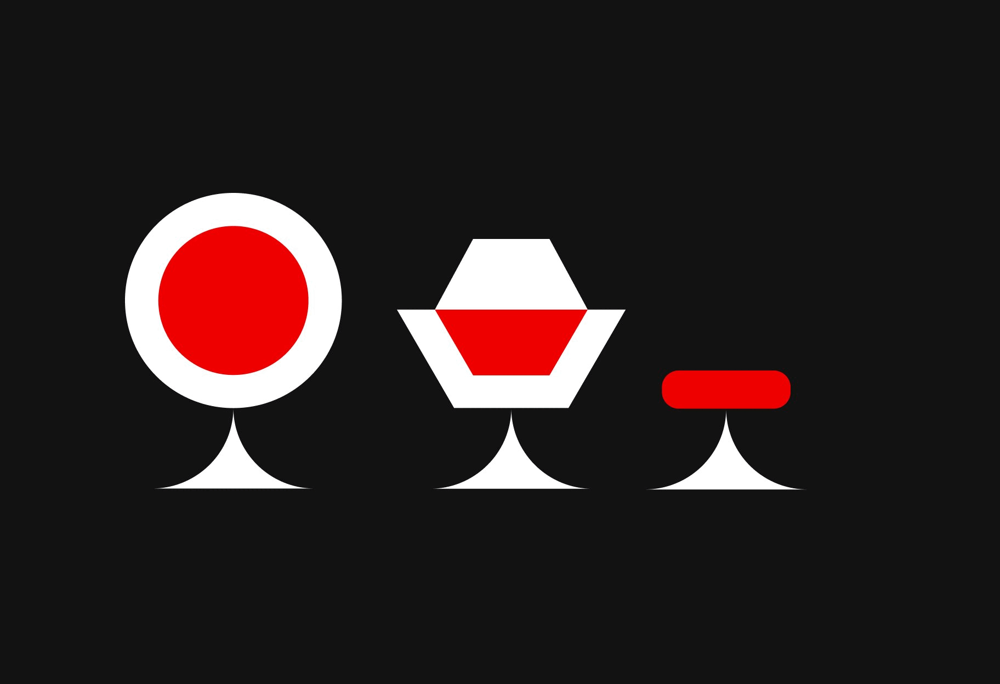

Utopos
Utopos is a digital archive of the past. The long-term goal is to build a visual identity that encapsulates the Art Deco, Streamline Moderne and Nuclear Age design movements.



Utopos is a digital archive of the past. The long-term goal is to build a visual identity that encapsulates the Art Deco, Streamline Moderne and Nuclear Age design movements.
